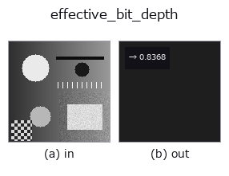

features op• 데이터 종류: image → feature
• 호출: fullseye.apply(img, "effective_bit_depth", a=0.5, b=0.5)(2-D 는 이미지 1 장 + 스칼라 노브 2 개 a,b∈[0,1] 모델)

*그림은 128×128 합성 입력에서 실제로 실행한 출력. 왼쪽이 입력, 오른쪽이 출력. 점군은 위에서 본 산점도(밝기 = z), 1-D 열은 꺾은선, 볼륨은 z 방향 최대값 투영, 동영상은 가운데 프레임, 복소 영상은 진폭이며, 그림이 되지 않는 반환값은 값 자체를 표시한다.*
*노브 a 는 출력을 바꾸지 않는다(실측: 0.1 / 0.5 / 0.9에서 동일).*
*노브 b 는 출력을 바꾸지 않는다(실측: 0.1 / 0.5 / 0.9에서 동일).*
> 이 연산자의 설명은 아직 번역이 없습니다. 원문을 그대로 싣습니다.
画像が実際に使っているビット数を推定して `[0,1]` に写して返す(feature)。
`8 ビットの器に入っていても、中身が 6` ビット相当しかないことはよくある ——
低ビットのセンサを引き伸ばした、一度 JPEG を通した、ガンマを掛けた、など。
ここでは占有している階調の実際の間隔から実効ビット数を推定する:
出現した画素値を並べ、隣り合う値の差の最頻値を刻み `Δ` とみて
`bits = log2(1 + 1/Δ)。返り値は bits / 16 (a/b` は未使用)。
適用条件と外れ方: (1) ★画素数が上限を決める。階調がほぼ連続(浮動小数の
まま処理した画像)では、最小の刻みは「値が N 個あるときの平均間隔 ~1/N」なので、
推定は `log2(N)` 付近で頭打ちになる —— 128x128(N=16384)の連続画像で実測
13.7 bit。16 に飽和するわけではないので、**「これ以上は測れない」線を
画素数から先に引いておくこと**(小さな切り抜きで測ると低く出る)。(2) 非線形な変換(ガンマ・対数)を通った後は
刻みが場所によって違うので、最頻値は「代表的な刻み」であって一様な刻みではない。
(3) ディザが掛かっている画像では階調が埋まるので、実効ビット数は高く出る ——
それは「情報として何ビット分あるか」ではなく「何段使っているか」の答え。
• 샘플 데이터 카탈로그(DL URL / 라이선스) —— 2-D 는 skimage.data(BSD/public)+ 합성, 3-D 는 실데이터 소스(Stanford/PDS 등)의 DL URL.
• 연산자의 내력·참고문헌 —— 이 연산자 족의 바탕이 된 연구/기법의 출처.
• 알고리즘의 정전(저자·연도)과 용도는 위의 패밀리 사용 가이드에 적혀 있습니다.
아래 프로그램은 실제로 실행됨을 확인했습니다(그림과 같은 입력). Studio 도움말에서는 이 블록이 버튼이 되어 즉시 불러와 실행할 수 있습니다.
effective_bit_depth 0.50 0.50
▸ Load this pipeline · Load & run
• gallery2d_features — py -3.11 examples/gallery2d_features.py
feature 를 입력으로 받는 것)features)blob_count · area_frac · count_contours · total_length · vol_count · sk_euler · sk_entropy_feat · sk_blur_effect
*Provenance: ops.py — 2D 연산자 레지스트리. 이 op 노트는 tools/opdocs.py md 가 자동 생성합니다(직접 편집하지 마세요).*
© 2026 Kazufumi Furuse — Fullseye operator documentation. Licensed under Apache-2.0.